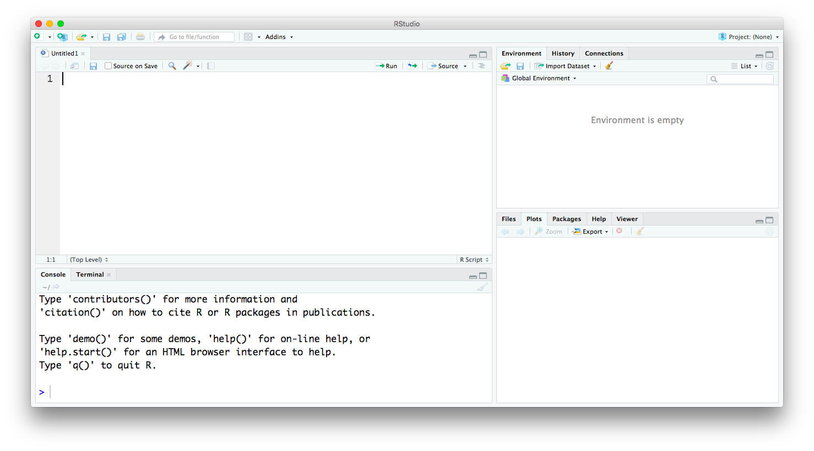

Deskriptive Statistik mit R
2020-05-26
Chapter 1 Willkommen und Einleitung
Die Gesundheitskrise hat uns gezwungen umzudenken und umzustrukturieren. Das bedeutet auch, einige Inhalte zu digitalisieren. Die Inhalte des Kurses “Deskriptive Statistik”" lassen sich sehr gut digitalisieren und mit einem GitBook lassen sich die Inhalte zusammen mit der Programmierung von R gut darstellen.
Wir werden jede Woche ein neues Kapitel hochladen, dass dann von Ihnen durchgearbeitet wird. Jede Woche Montag um 14h werden wir erst einen LiveCall machen, indem ich einen Überblick über die zu besprechenden Themen geben werde. Anschliessend werden die gesammelten Fragen beantwortet. Bitte nutzen Sie diesen LiveCall und die online Funktionen auf Studip, um Fragen, Anregungen und gerne auch Verbesserungsvorschläge zu stellen.
1.1 Was braucht man für diesen Kurs?
Wir werden in diesem Kurs viele zentrale Themen zur Datenverarbeitung besprechen. Zentral ist es nötig, R und Rstudio zu installieren.
- R frei verfügbare Software https://www.r-project.org/
R besteht aus 3 Hauptfenstern: (1) Konsole, um direkt Befehle einzugeben, (2) Editor, um eine Abfolge an Befehlen zu speichern und auszuführen, (3) Grafikfenster
- RStudio https://www.rstudio.com/products/rstudio/download Es gibt verschiedene Möglichkeiten mit R zu arbeiten. Wir werden die grafische Oberfläche, die RStudio bietet nutzen. Dieses Programm bietet eine eine gut handhabe Oberfläche, viel Unterstützung und integriert viele Apps (Shiny, Markdown, Bookdown …), die R nutzen. Unterschiedliche Editoren zur Bearbeitung von R Dateie sind:
- RStudio (empfohlen und in diesem Kurs benutzt)
- Notepad++ (Windows)
- Textwrangler
- \(\dots\)
RStudio Logo
 So sieht RStudio ohne Inhalt oder Date aus.
Die 4 Hauptfenster von RStudio
In der Standarddarstellung befindet sich oben links der Code Editor, oben rechts können sie Workspace und History ansehen, unten links befindet sich die R Console, in der Sie den Code direkt eingeben können und unten rechts lassen sich unter anderem Plots und Files anzeigen. Schauen Sie sich die verschiedenen Möglichkeiten an, die die verschiedenen Tabs in den Ecken bieten.
So sieht Rstudio mit ein bischen mehr Inhalt aus.
RStudio mit Datensatz und grafischer Darstellung eines Datensatzes
- oben links steht der Code, der gespeichert und auch aus dem Editor ausgeführt werden kann. (Mac: Markierung des auszuführenden Codes und dann CMD + Enter)
- unten links man kannn den auszuführenden Code auch direkt unten in das Konsolenfenster eingeben. Dann wird dieser allerdings nicht gespeichert. Es wird empfohlen, Code der erstmal nur ausprobiert wird, direkt in das Konsolenfenster einzutragen. Wenn der Code das korrekte Ergebnis liefert, sollte er im Editor in einem Skript gespeichert werden.
- oben rechts lassen sich History der eingegebenen Befehle und auch die Inhalte des Workspace anzeigen
- unten rechts kann man sich die geladenen Pakete für R, sowie die verschiedenen erstellten Grafiken anzeigen lassen
Die Anordnung der Fenster lassen sich über RStudio > Preferences und dann Pane Layout ändern. Über Preferences können Sie sich generell anzeigen lassen, welche Änderungen Sie u.a. bei der Anzeige vornehmen können bzw.~wollen.
- Shiny App
Das ist eine App, die in RStudio integriert ist und die deskriptive Daten mit R bildlich und interaktiv veranschaulichen kann und auch veröffentlicht. Shiny wird zwar nicht Teil des Lernstoffes, wir werden uns diese Möglichkeit der Datendarstellung aber einmal anschauen.
Beispiel des Screenshots einer Shiny App, die interaktiv die Normalverteilung einer übergebenen Anzahl beobachteter Werte anzeigt.
1.2 Anforderungen und Zeitplan für das Semester
Dieser Plan ist natürlich flexibel und wird sich auch an dem Fortschritt der Studierenden richten. Wenn Sie Fragen haben, wenn etwas nicht funktioniert, wenn etwas unklar ist, bitte nutzen Sie alle Möglichkeiten (LiveCall, Blubber, E-Mail) um uns dies wissen zu lassen. Dann können wir auch gern den Plan anpassen. Diese Seite wird immer weiter ausgebaut und angepasst.
- regelmäßige Teilnahme (Durcharbeiten des Gitbooks) und Abgabe von Übungen
- Klausur (wird wahrscheinlich eine E-Klausur)
Willkommen, Einleitung, R Umgebung 20.04.
Datenbeschreibungen in R 27.04.
- Scripts und Editor
- Datenformate (int, dbl,chr,dttm, …)
- Datentransformation:
dplyr
filter()
arrange()
select()
mutate()- Häufigkeitsverteilungen 4.05.
- Normalverteilung
- Histogramme, Boxplots
- Maße der zentralen Tendenz 11.05.
- mean, mode, modus
- Streuungsmaße
- Kovarianz und Korrelation 18.05.
- Beschreibungen describe()
Datenvisualisierungen 1 25.05.
Datenvisualisierungen 2 8.06.
ggplot()- Datenvisualisierungen 3 15.06.
- Summary
- Korrelation – Datendarstellung
Explorative Datenanalyse 22.06.
Modelle 29.06.
- Wiederholung und Fragerunde 6.07.
- eventuell live
- Klausur 13.07.
- Das Format der Klausur muss noch entschieden werden und hängt auch von der weiteren Entwicklung ab.
1.3 Tutorium
Wir sind in der glücklichen Lage, ein Tutorium zu diesem Kurs anbieten zu können. Das Tutorium wird von Peter Hofmann geleitet.
peter.hofmann@uni-goettingen.de
Viele Dinge, die Sie eventuell nicht im Live Call direkt ansprechen wollen, können Sie etwas niederschwelliger mit ihm besprechen. Er wird viele zusätzliche Übungen und Beispiele zur Verfügung stellen.